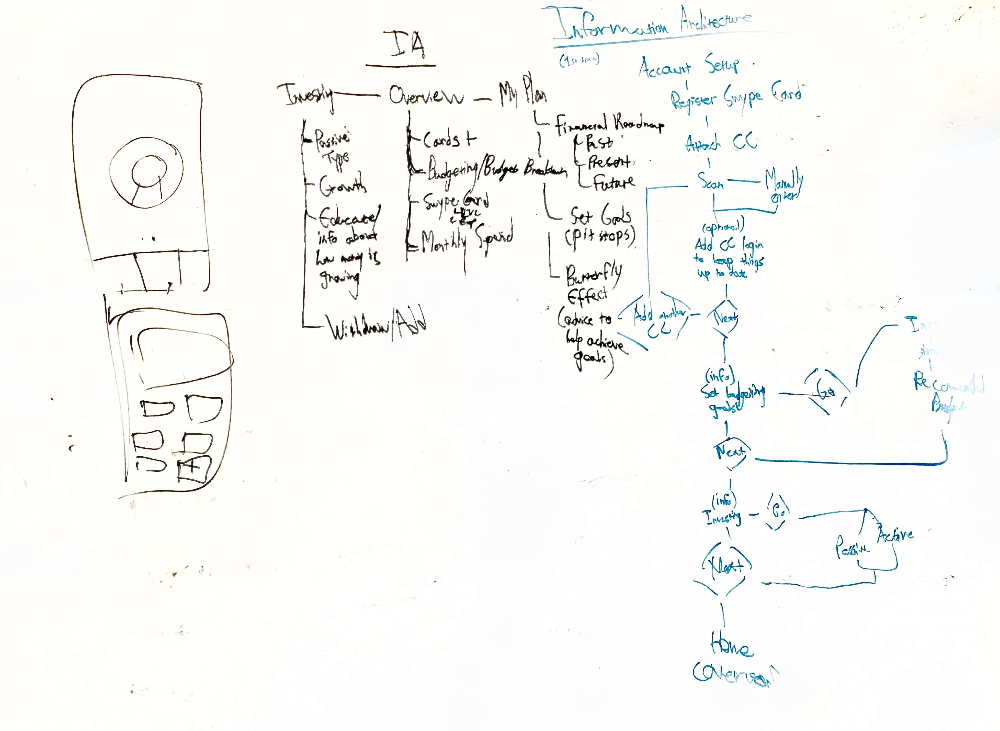

The User.
College students, young professionals, and more.
The Timeframe.
10 weeks.
The Tools.
Figma and Adobe XD.
The Role.
Product Designer.
Finances are difficult. Managing income, spend, budgets, investments, and more make financial management a frustrating task for even those well into their careers. This problem is exacerbated by how difficult and separated finances are. People newly financially independent are often expected to figure all this out on their own.
More about the final design can be seen in the "Final Design" tab.
This project was an innovation lab project, set with the goal of exploring fintech solutions. I was the lead designer in a team with a project manager and another design intern. I was responsible for strategizing the design process, leading the design direction, and advocating for the design across the company.
The project performed extremely well in metrics for proposed adoption rate and also resulted in patents for the technology driving it.
I strategized the design process focusing on wider exploration and pushing for more unique and innovative solutions. Though our process was flexible as the design progressed, it ended up in the following stages:
We began with the prompt of improving financial management for the newly finacially independent. To narrow our scope and break down the problem, we conducted iterative research, where each stage of research informed the next.
To begin our exploration and understand the space, we took out a larger lens and explored financial competitors that were also targeting our users.
Through this, there were some clear findings:
Though there were many competitors, they often added another step to a user’s journey. While one might not be much, combined with many it becomes daunting to set up and maintain.
With an understanding of the space, the next step was to understand the user. I created an interview script and we interviewed 16 college students and young professionals at a nearby university campus. The goal was to understand how they spent their money and managed their finances.
After the interviews, I led an affinity diagramming session to gather insights.
Through this, we learned new information such as attention on credit card rewards, lack of budgeting, and more details that could help us build out our personas.
These two personas represented our primary users, a college student and a new professional, and also served to get everyone on the same page as well as guide our design.
We also found key problems that these personas face, surfaced from our affinity diagramming session.
With a good body of research and an understanding of the design space and scope, we could begin ideating on solutions that would innovate how finances are managed for our users.
Before we began concepting, I created some design principles based on our findings that would help guide our ideation along with the personas.
Armed with these design implications, each of us separated and came up with four concepts each. We then came back together and voted on our favorites based on principles, personas, and key problems.
Thus, the concept of Swype was born. An app with a card that combined payments and management to create a truly holistic financial experience. In order to not add to the already overcrowded wallet and keeping in line with the “intelligent” principle, I reached out to other teams to see if it was possible for Swype to intelligently chose and pay with an attached credit card that offered the best rewards for the transaction. It was.
The Swype concept could effectively replace the wallet, payable through an app or a card if phone payments weren’t possible at the vendor. The concept’s user journey could include fast payments, budgeting, transaction tracking, and investing all in one flow.
With our concept set, we could begin creating design artifacts, test it with users, and reiterate.
The first step in creation was to build out the skeleton. I created the information architecture of the system, building how the system was laid out as well as the onboarding. Below is a sketch of the architecture:
From the architecture, we created wireframes to quickly introduce and test the concept with users.
The concept greatly appealed to users. The biggest value to many was the ability to reduce their wallet down to a single card, with the added bonus of various financial services. They also had feedback regarding what features they would like surfaced on each page.
Before we began iterating the fidelity of our prototype, I created a design system to ensure consistency and clear hierarchy across the designs. Componentizing our elements would also speed up our design and iterations, while also easing the burden of developers.
The color palette for Swype. Swype-blue served as the primary CTA color, while Swype-blue-steel with its higher contrast was used for headings and body.
Roboto was our primary font, with different sizes and weights to indicate information hierarchy.
The Swype card should be accessible quickly from any tab, so it serves as the main layer, with different pages existing as floating cards swapping between themselves.
With the design system in place, we were able to quickly create a high-fidelity design for testing. I created an interactive prototype of the screens so that we could have users freely explore the app and give their feedback.
During this stage, there were many small iterative sessions of testing with a user, making changes, and testing again.
After rounds of iteration, we finally came up with our final design, ready to be promoted across the company.
Our final design focuses on three tabs: balance, investing, and budgeting. On each page at the top of the hierarchy is the Swype card for easy access to payments and management of the card no matter what the screen.
More details of the design can be found in the final design tab.
Using our final prototype, we tested it with users for evaluation. In this, we were aiming to see their rating on each feature and how likely they would use it if it was already on the market. With the nature of the work being part of an innovation lab, our primary metric of success was a projected adoption rate.
In our feedback, users really liked the concept of having all the finances together in one app. Budgeting was also almost universally favored, with the idea of the card payments directly translating into a simplified budget cognitively aligning with many. The simplicity and educational concept also was a constant note of interest.
In the end, the project surpassed its set metrics of projected adoption rate and also resulted in patents for the technology driving it.
Thinking back and moving forwards, there are a few future steps that I would be worth exploring to improve Swype.
In our exploration, a small portion of users conducts card transactions through their phones with tools like Apple Pay. These users were also the most unwilling to switch to an app or physical card to make payments. If Swype could be integrated into those payment systems as a card, it could integrate itself into those users’ flows as well.
The current integration of Swype has automated investing, with the purpose of introducing users and educating them regarding investments. However, some users might already consider themselves experts and would want to manage the investments themselves. Giving them more freedom in this area would help retain these users and their activity on Swype.
A payment method that has arisen recently in popularity is paying friends through mobile apps, such as Venmo. Though we didn’t explore this, it stands as an area with many major financial transactions. Integrating a similar feature in Swype would help it in its goal of holistic financial management.
My experience working on this product was extremely interesting designing for a fintech solution. It made me realize how complicated and technical the financial world is, yet also how much unnecessary complexity there is as well. It was also a great experience leading a team to something successful.
One of the most important lessons I learned was that taking the initiative and motivating the team through involving everyone in the process helps create a better product, with everyone having stake in it.
The technology behind this design and concept now has patents.
{kind=link}
{kind=link}
{kind=link}